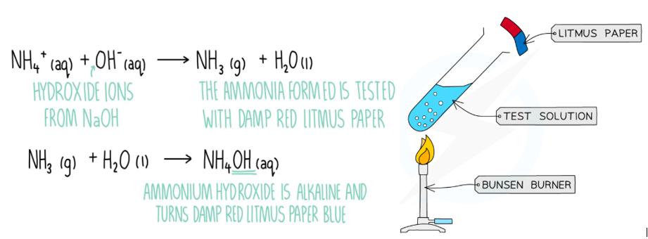

Specimens
A is \(0.0200\,mol\,dm^{-3}\) \(KMnO_4\). B is acidified \(FeSO_4\). C is \(CuSO_4\) mixed with \(Na_2CO_3\).
Question 1 - Quantitative Analysis
Put A in the burette. Pipette \(25.0\,cm^3\) of B into a conical flask, add dilute \(H_2SO_4\) and titrate until a permanent pale pink colour remains.
\[MnO_4^-+5Fe^{2+}+8H^+\rightarrow Mn^{2+}+5Fe^{3+}+4H_2O\]
- Tabulate readings.
- Calculate average titre.
- Calculate concentration of \(Fe^{2+}\) in B.
- Calculate mass of \(FeSO_4\) per \(dm^3\) of B.
- State the oxidizing agent.
Question 2 - Qualitative Analysis
- Add water to C and shake.
- Add dilute \(HCl\) to a fresh portion and test gas with lime water.
- To solution add \(NaOH\) in drops and excess.
- To another portion add \(NH_3\) in drops and excess.
- To another portion add \(BaCl_2\), then dilute \(HCl\).
Question 3 - Practical Knowledge
- Why is \(H_2SO_4\) preferred to \(HCl\) in permanganate titration?
- Why is \(KMnO_4\) not used with an external indicator?
- Draw a labelled burette setup.
- State two endpoint errors.
Teacher Solution
| Titre | Rough | 1st | 2nd | 3rd |
|---|---|---|---|---|
| A used / \(cm^3\) | 24.95 | 24.70 | 24.75 | 24.70 |
\[Average=24.72\,cm^3\]
\[n(MnO_4^-)=0.0200\times\frac{24.72}{1000}=4.944\times10^{-4}\,mol\]
\[n(Fe^{2+})=5\times4.944\times10^{-4}=2.472\times10^{-3}\,mol\]
\[C(Fe^{2+})=\frac{2.472\times10^{-3}\times1000}{25.0}=0.0989\,mol\,dm^{-3}\]
\[Mass\ of\ FeSO_4=0.0989\times152=15.0\,g\,dm^{-3}\]
Oxidizing agent: \(KMnO_4\) / \(MnO_4^-\).
Qualitative Report
| Test | Observation | Inference |
|---|---|---|
| C + dilute HCl | Effervescence; gas turns lime water milky. | \(CO_3^{2-}\) present. |
| Solution + NaOH | Blue ppt insoluble in excess. | \(Cu^{2+}\) present. |
| Solution + NH3 | Pale blue ppt dissolves in excess to deep blue solution. | \(Cu^{2+}\) confirmed. |
| Solution + BaCl2 + HCl | White ppt insoluble in acid. | \(SO_4^{2-}\) present. |

Redox Titration
The endpoint is permanent pale pink.

Copper(II)
Deep blue solution in excess ammonia confirms \(Cu^{2+}\).